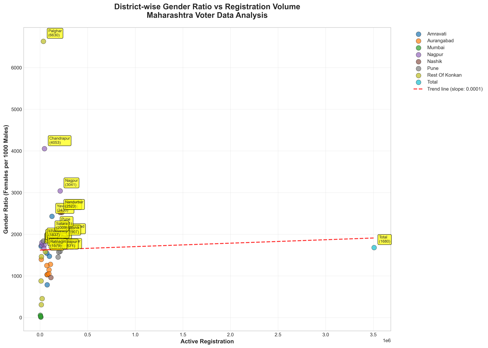
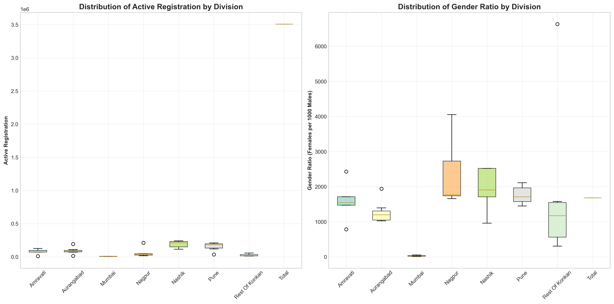
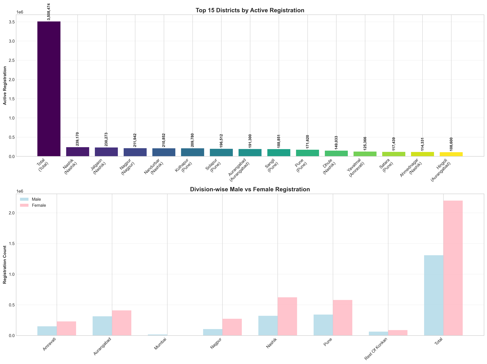

Data Science Projects & Visualizations
Explore various data visualizations and analysis projects using Python and statistical methods
Maharashtra Voter Registration Analysis
Comprehensive analysis of voter registration data from data.gov.in, focusing on gender distribution patterns and district-wise variations across Maharashtra.

Gender Ratio Analysis
District-wise gender ratio vs registration volume scatter plot

Distribution Analysis
Box plots showing registration patterns across divisions

District Rankings
Top districts by registration volume and comparative analysis

Mathematical Functions
Harmonic wave function visualization

Statistical Analysis
Correlation and distribution analysis